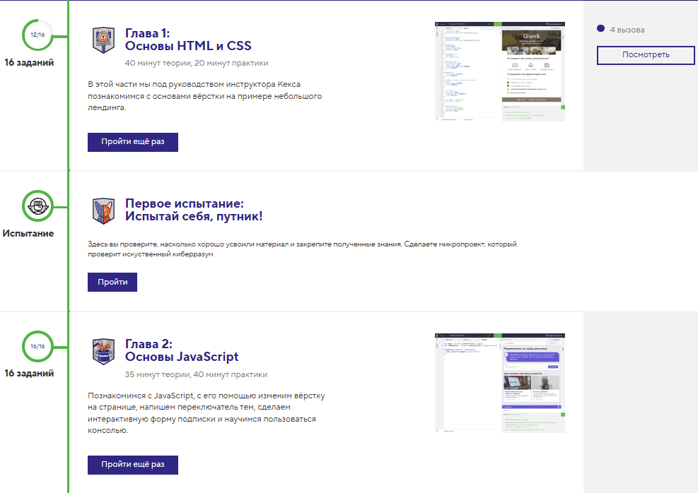

Министерство науки и высшего образования Российской Федерации
Новосибирский государственный технический университет
КАФЕДРА ТЕОРЕТИЧЕСКОЙ И ПРИКЛАДНОЙ ИНФОРМАТИКИ
Основы веб-программирования
Практическое задание №2. Вёрстка
| Факультет: | ФПМИ |
| Группа: | ПМИ-42 |
| Студент: | Никулин Владислав Вадимович |
| Преподаватель: | Цыгулин Алексей Александрович |
Новосибирск 2026
1. Цель работы
Познакомиться со структурой HTML-документа, освоить основы вёрстки на HTML и CSS, создать страницу со своей презентацией.
2. Постановка задачи
- выполнить задания на сайте htmlacademy.ru;
- сформировать страницу о себе с текстом, ссылками и фотографией;
- сформировать страницу с отчётом по работе в виде HTML-документа с сохранением всех атрибутов отчёта: титульным листом и текстом отчёта с изображениями.
3. Ход работы
Задания на htmlacademy.ru
Выполнены практические задания, необходимые для данной работы:
- Знакомство с фронтендом;
- Знакомство с HTML и CSS.


Страница «Обо мне»
Сформирована страница «Обо мне» с текстом, списками,
ссылками и фотографией. Для оформления используется внешний файл
style.css, подключённый тегом <link>; он же применяется
к странице отчёта.
Отчёт в виде HTML-документа
Сформирована страница отчёта. В файл style.css записаны праила для отчёта, в том числе и для печати..
4. Вывод
В результате работы получены навыки создания HTML-документов, подключения CSS и оформления контента. Обе страницы используют общий файл стилей, что демонстрирует повторное использование CSS.